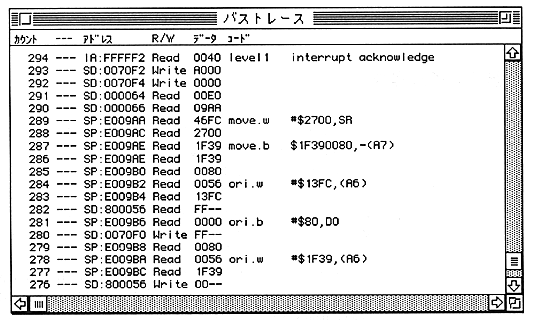

BH
Description Displays the bus history for the past expr since the last stop. Because of MC68000 instruction prefetch, the disassembly display of this command is not always accurate. Not. In particular, the instruction after the conditional branch is likely to be displayed incorrectly. Also, due to the hardware specifications, debugger operations may be recorded.
In the following example, the SCSI communication status of the debugger is recorded.
